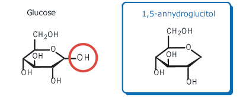
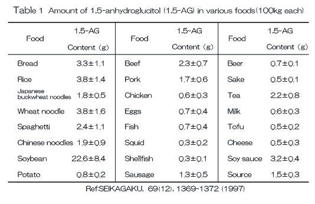

1,5-anhydroglucitol
"1,5-anhydroglucitol(ANSOROL)" is a kind of anhydrosorbitol, which is also called 1,5-AG, is a rare sugar that has a similar structure
to glucose. This is also a kind of natural product which exists widely in nature like plants, animals, and human body.

"1,5-anhydroglucitol(ANSOROL)" is included in a wide range of familiar food. (See Table 1) But the amount is small. Soy with
a relatively large component of "1,5-anhydroglucitol" includes only 23g (23ppm) in total in 100kg.
